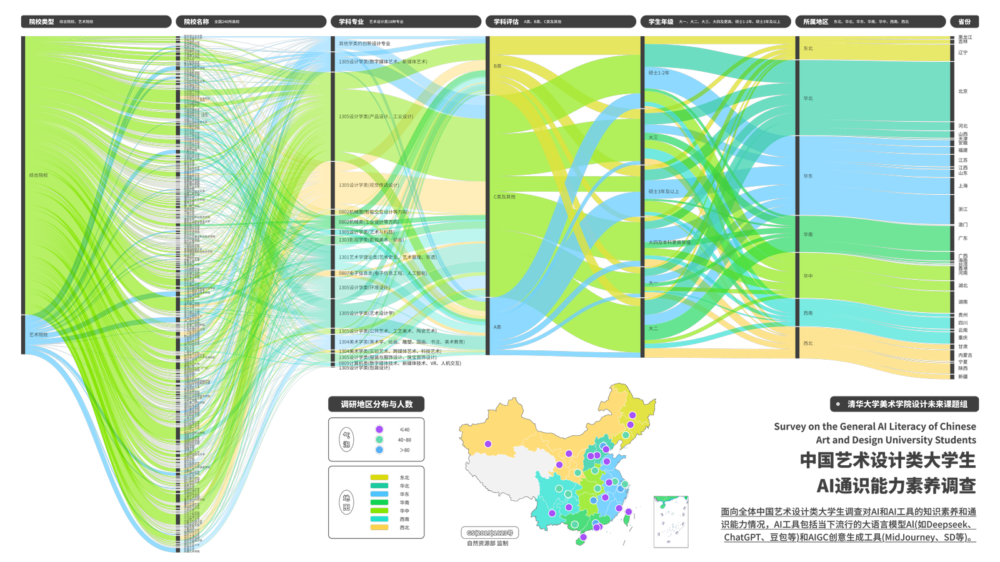
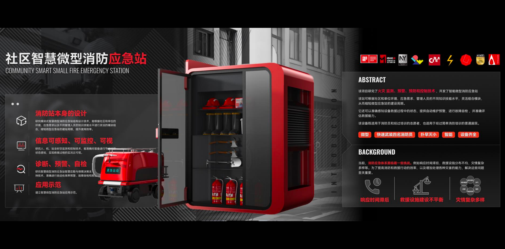
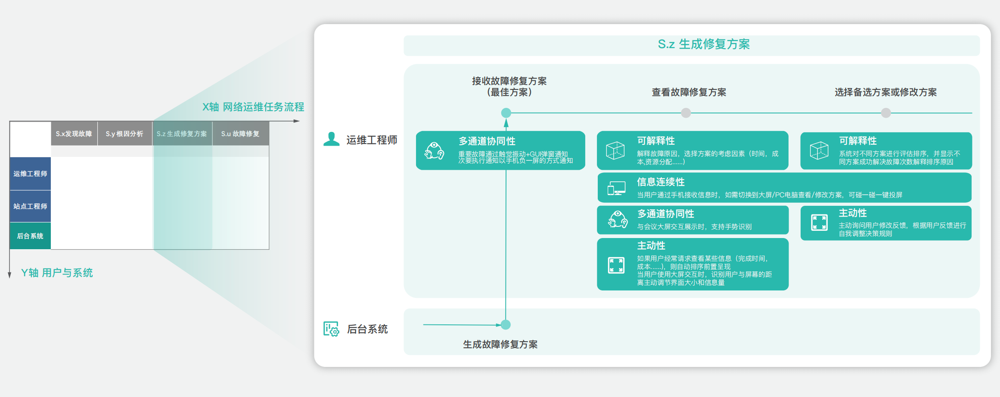
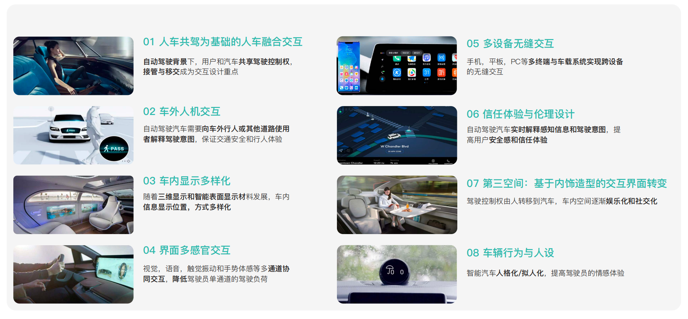

2019.09 — 2024.07
设计学博士
湖南大学设计艺术学院
Yuyue Hao · 博士后 水木学者
研究方向为智能界面设计与应急人类行为，聚焦人车交互、人智协作与智能体设计。关注应急情境下人类的认知心理与行为及人机协作关系，综合运用文献计量与荟萃分析、行为实验与模拟实验及定量数据分析方法。现担任《国际减少灾害风险杂志》《国际信息技术与决策杂志》《应急与危机管理杂志》《IET 交通系统》《国际人因工效学》等 SCI 期刊审稿人。
最新动态
教育经历
研究领域
项目经验

面向中国艺术设计学生，研究人工智能素养的构成、现状与培养路径。

围绕社区消防应急场景，开展微型应急站的系统设计与关键技术研究。

针对智能网络运维工作流，研究复杂信息呈现与操作体验的优化方法。

探索智能汽车场景中的信息交互、用户体验及驾驶安全感知设计。